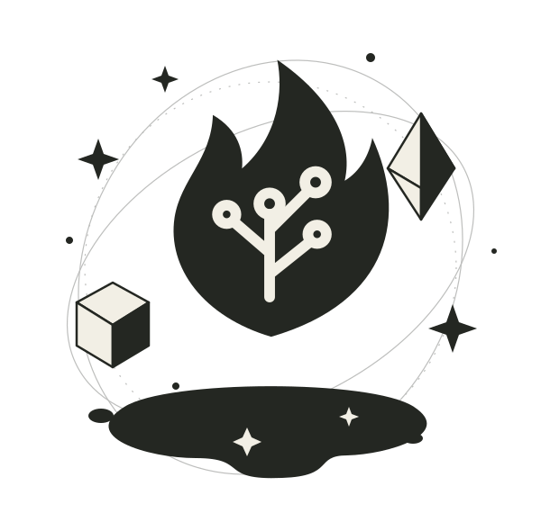

ДЛЯ PATH OF EXILE 2
Всё начинается
с искры.
Собирайте идеи в сильного персонажа.
Знакомые расчёты PoB. Больше ясности.
ЛокальноОткрытый кодИсходный Lua
01 / ИСКРА ВАШЕЙ СБОРКИPoB × PoE 2

Своя ветка развития
Своя комбинация
ИДЕЯ → СБОРКА → РАСЧЁТ